The Instance Model Viewer is a plug-in originally developed by Brendan Breuil of ERAU and now integrated within OSATE2 by Peter Feiler and Julien Delange.
To initially view an instance in the IMV, right click on an instance file (i.e. a file with an “aaxl2” extension), select the “OSATE” menu, then select “Explore Instance or Implementation in IMV”.
The IMV perspective will automatically be opened and the instance will be displayed in the AADL graphical viewer.
You can also view component implementations in packages graphically. right click on a package file (i.e. a file with an "aadl" extension), select the “OSATE” menu, then select “Explore Instance or Implementation in IMV”. Then select a component implementation contained in the package to its graphical view.
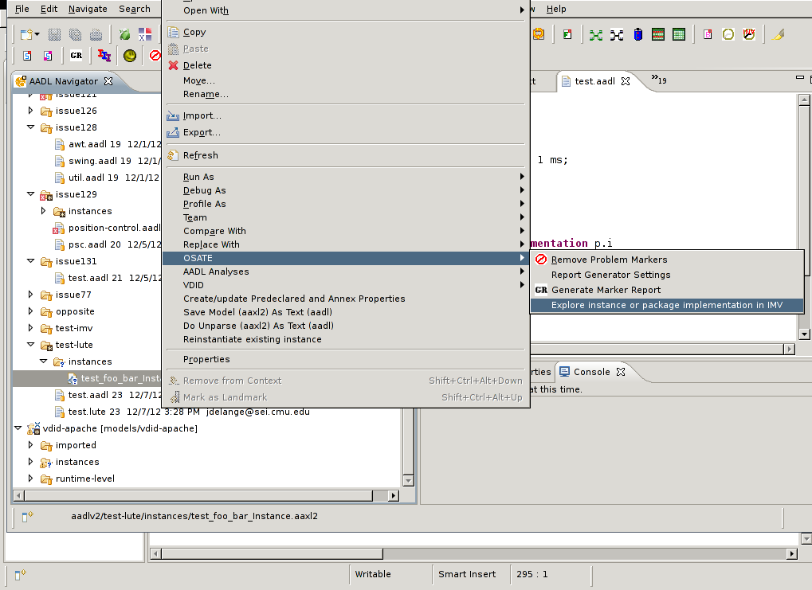
Notice that a folder named “imv” has been created within the project. When an instance is initially opened within the IMV, a file with the “imv” extension is automatically created within the “imv” folder and the name of the file is the same as the instance file. When this file is selected, it will automatically open the instance within the IMV perspective. Also, any changes that were made to the instance will be reflected in the model that is loaded.
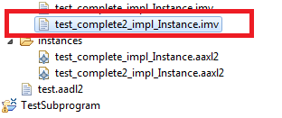
You can also open the graphical viewer on AADL text files. In this case, you can view any of the component implementations contained in the package of the selected file with the "aadl" extension. Select any of the implementations in the Outline view and it will be displayed graphically.
The AADL graphical viewer will function as the primary view for presenting the graphical presentation of AADL models within the IMV Eclipse perspective. Users will be able to use the graphical viewer to explore the structure of an instance model’s constituent components, the interactions between components, and the flows of information and control through components. Since instance models are inherently hierarchical, users can navigate to different levels in the hierarchy by clicking on a component’s graphical symbol. Also the instance model hierarchy is displayed in a tree representation using the standard Eclipse ‘Outline’ view. So when a user selects a node from within the Outline view, the selected component will be displayed in the graphical viewer.

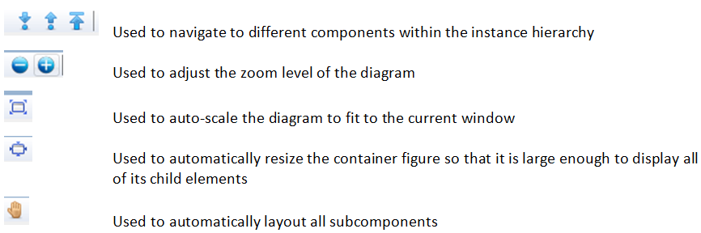
As an experimental feature you can view the instance model with multiple levels of in-place component nesting. By default, only one level of nesting is shown. You can increase or decrease the nesting level through two toolbar buttons.
You can also navigate error propagations from the error model annex annotations.
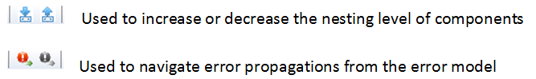
Tool tips pop up if you pause the cursor over a graphical model element. Currently IMV supports popping up the connection name if the cursor is paused over a connection.
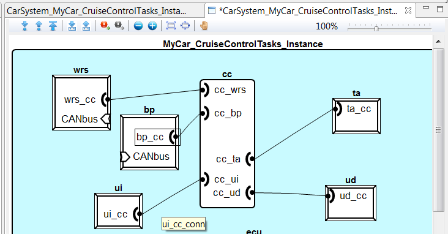
When developing AADL models using the textual and graphical editors, the distinction between mode specific component configurations is not obvious – especially for complex systems. To make the distinction between modes more evident, the IMV filters the components that are displayed in the graphical viewer based on the current mode (a separate view inside of the IMV perspective is used to change the current mode.) This feature provides users with the ability to visualize how the interactions between components change as mode changes occur.
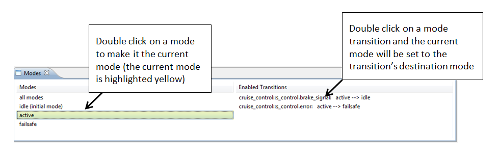
The flow-highlighting feature will be used to graphically display flow paths within the graphical viewer. A separate view called ‘Flow Paths’ is used to select which flows to highlight. When a flow is selected from within the flow path view, all of the connections and features that comprise the selected flow will are highlighted in the graphical viewer. This feature can be used when developing AADL models to verify that the flows have been defined correctly and also for analyzing and explaining how information and control flows through the architecture.
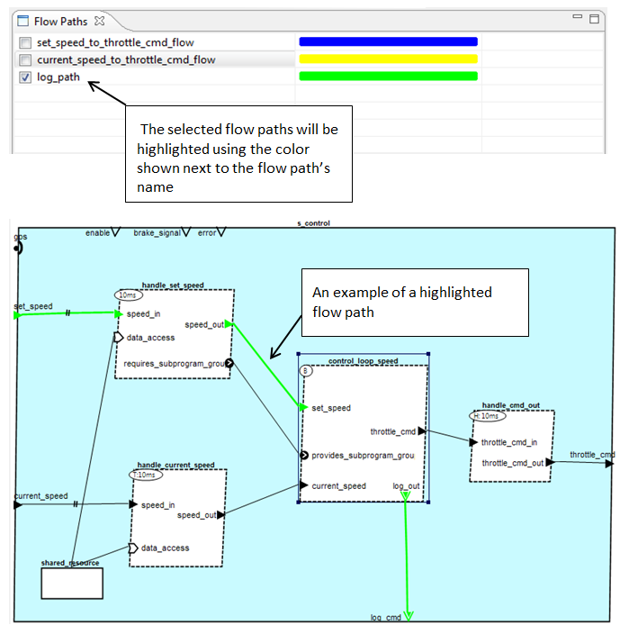

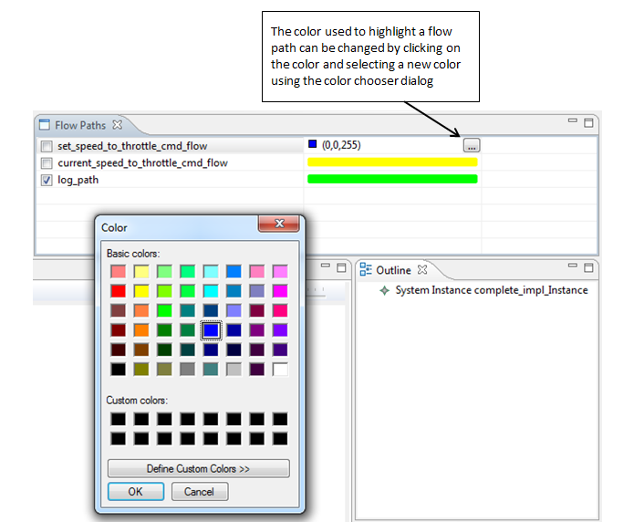
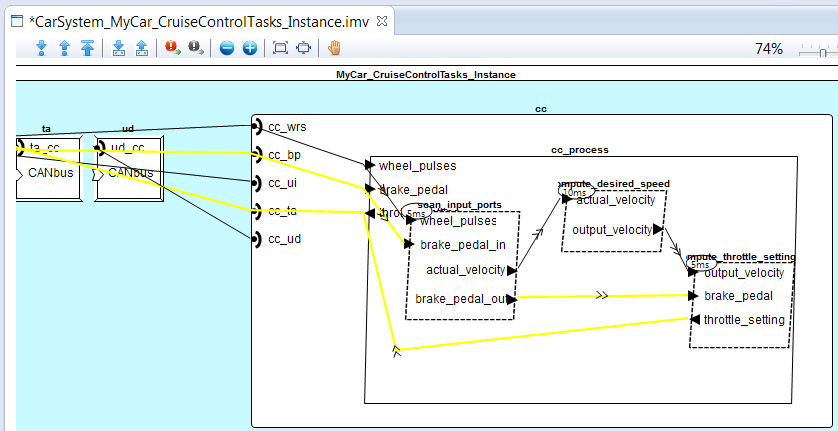
When a user wants to view and analyze an AADL model using the IMV, the user may only be concerned with certain aspects of the model; therefore, the IMV provides the user with the ability to filter the components that are displayed in the graphical viewer based on feature type and component type. As a result, users are able to view the models from different perspectives. For example, a model containing threads, data, devices, processors, and busses can be filtered to include only hardware components by specifying that only components with ‘bus access’ features should be displayed. This feature will allow users to reduce the complexity of the models being displayed and thus facilitate comprehension.
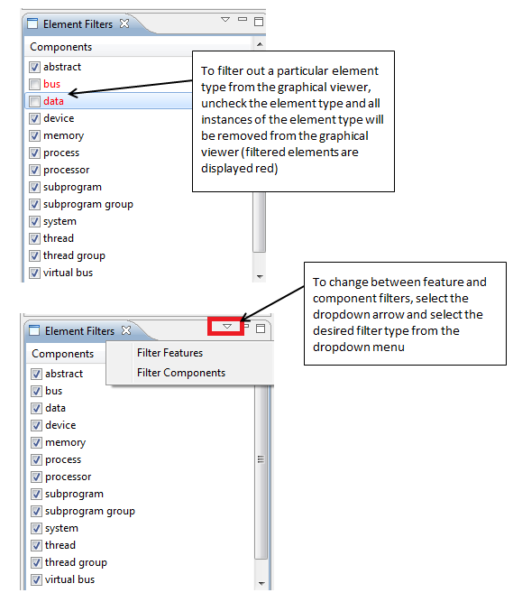
The IMV tool provides the user with the capability to create an image of the contents of the AADL graphical viewer in JPEG or PNG format. The image capture can be set to automatic mode so that an image will be created every time the diagram is saved. This feature allows the graphical presentation of the instance model to be efficiently used in documents and presentations.
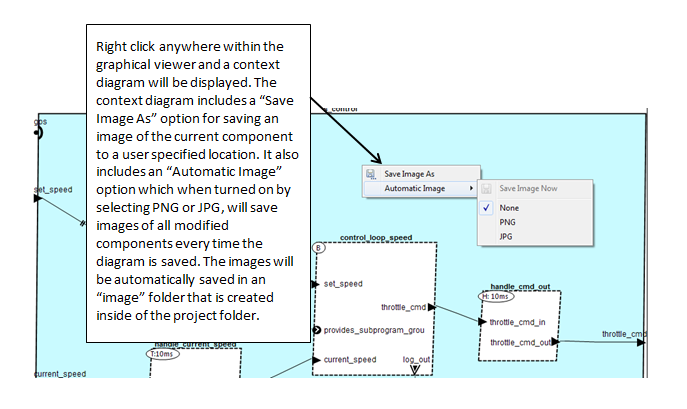
The IMV uses property decorations to graphically display a components property values. Below is an example of a property decoration for graphically displaying the 'Dispatch_Protocol?' and 'Period' property.
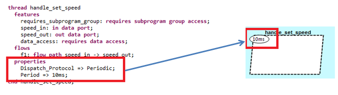
The IMV tool defines an Eclipse extension point for adding custom property decorations to AADL components. Anyone can create a custom property decoration by extending the property decoration extension point.
The extension point ID is: edu.erau.aadldiagram.propertydecorations
Below is the interface that must be implemented in order to contribute a custom property decoration using the "edu.erau.aadldiagram.propertydecorations" extension point.
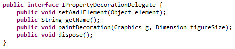
Method descriptions:
NOTE: Refer to this tutorial (section 3.3) for additional instructions on how to provide an extension.
To use the existing OSATE analysis plugins from within the IMV Eclipse perspective, a system instance must be selected (the system instance is always the root component in the instance hierarchy). Therefore, either select the system instance component from withing the graphical viewer or select the system instance from within the "Outline" view. When the system instance is selected, the analysis plugins will be enabled.